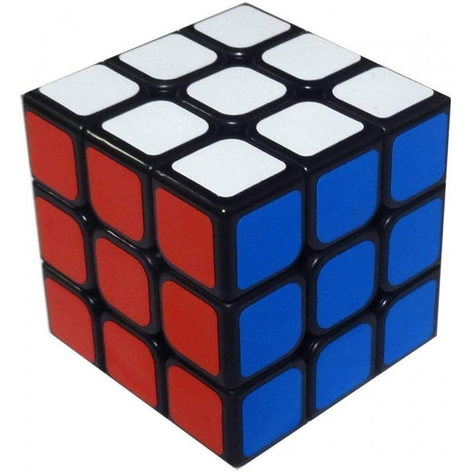
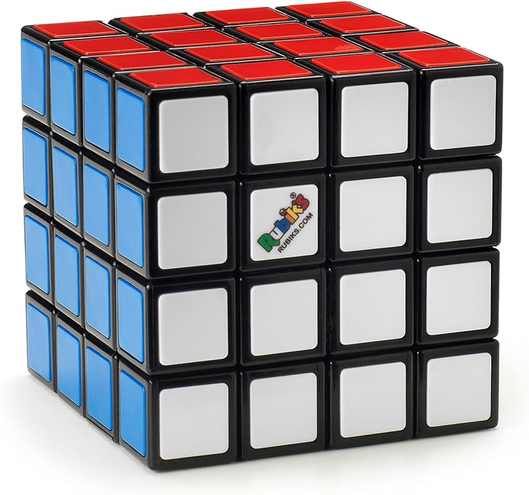
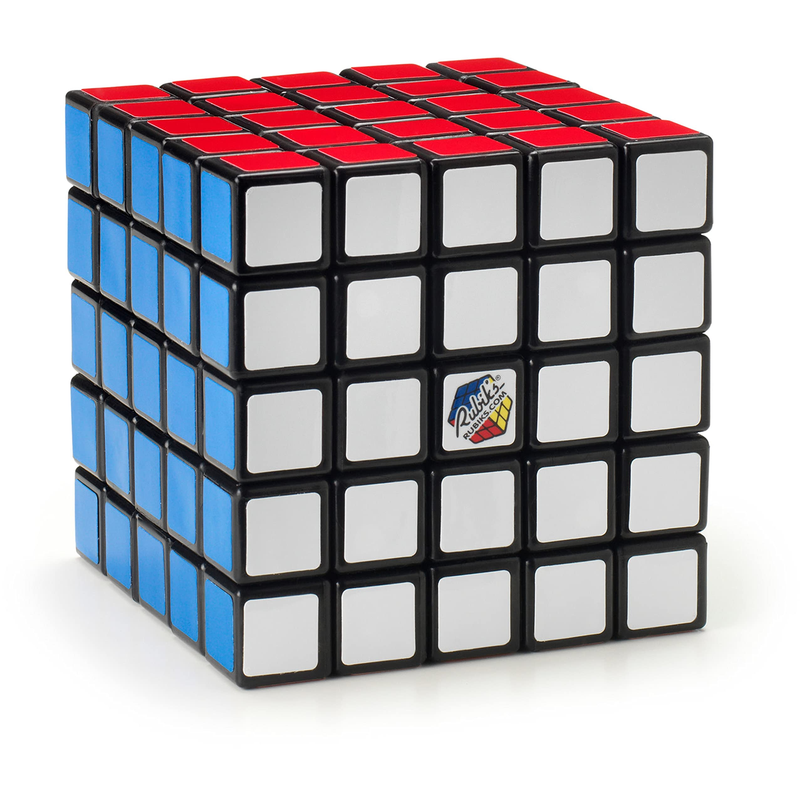
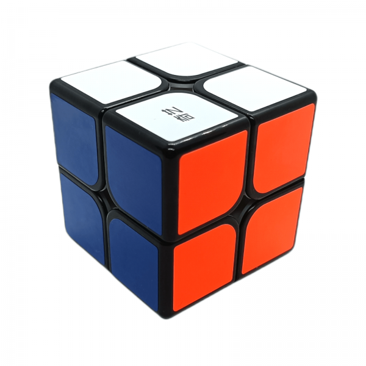
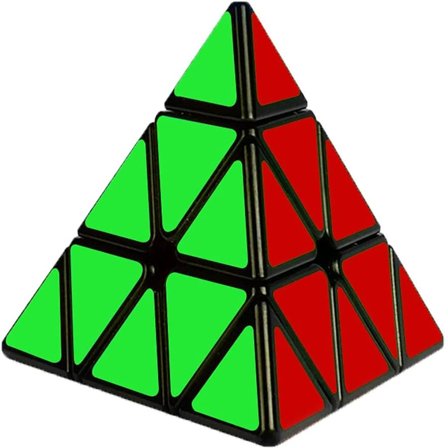

3x3x3
3x3x3
Es el modelo clásico y más conocido.
Tiene 3 capas en cada dimensión y es el que la mayoría de la gente piensa cuando escucha "Cubo de Rubik".

4x4x4
4x4x4
También conocido como "La venganza de Rubik"
Es una versión más compleja que el cubo clásico, con cuatro capas en cada dimensión.

5x5x5
5x5x5
Conocido como "El cubo del profesor"
Es aún más desafiante que el 4x4x4, con cinco capas en cada dimensión.

2x2x2
2x2x2
Aunque no es tan común como el 3x3x3
El cubo 2x2x2 es popular por su simplicidad y rapidez para resolverlo.

Pyraminx